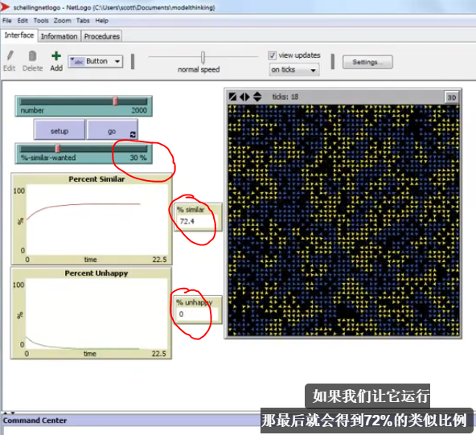
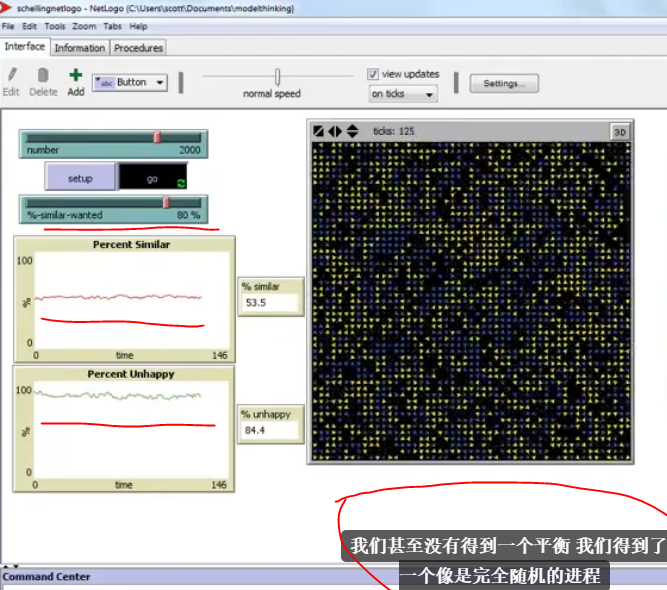
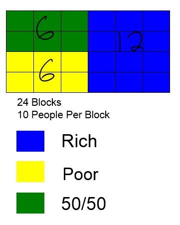
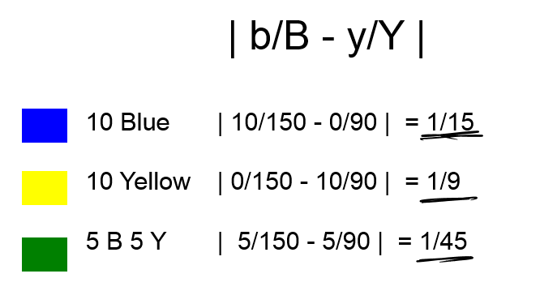
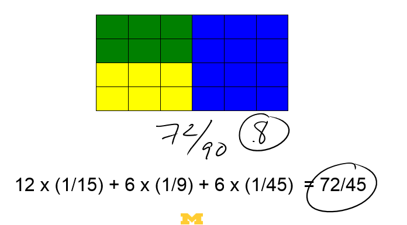
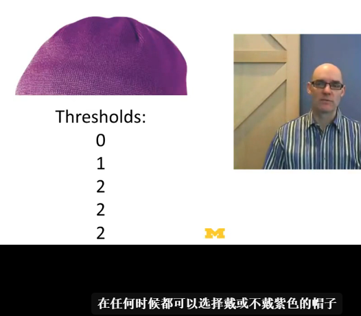
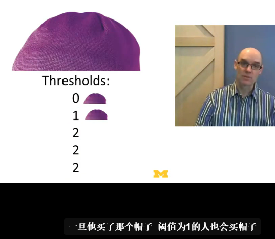
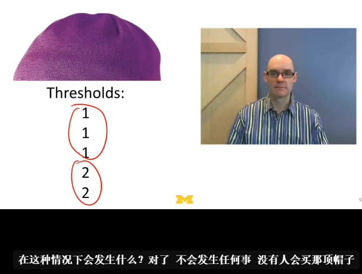
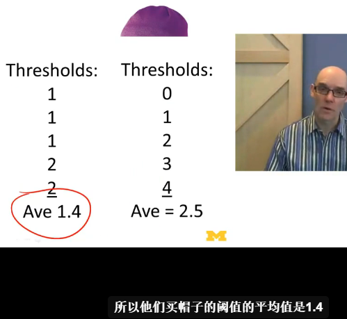

Model thinking 模型思维课程笔记
之前一段时间一直在 Coursera 上刷课，正好赶上了招牌课程之一———— Michigan 大学的 Model Thinking。
把自己断断续续做的笔记整理了下，幸好最开始就是用 Markdown 格式保存在 Evernote 里，所以省了很多事。
Model Thinking 模型思维（中文版）
在本课程中，你将了解如何运用模型进行思考、理解我们生活的这个复杂世界。
Sessions
Dec 15th, 2014 - Mar 11th, 2015
Course at a Glance
10 weeks of study, 4-8 hours/week, 简体中文 subtitles
Instructors
Scott E. Page
University of Michigan
Unit 2: Segregation & Peer Effects
2.2 Schelling’s Segregation Model (Micromotives and Macrobehavior 微观动机与宏观行为)
– Micromotives need not be equal to macrobehavior.
What’s Schelling’s model about? It’s about people choosing where to live.
This is an Agent Based Model.
In an agent based model, you’ve got three things. You’ve got these agents, which in this case will be people. All right, that’s part one. Then you have their behaviors. You have to say, okay, what rules do they follow. That’s part two. And then the third part is, you just add them up.
Key points
- People want 30 percent of their neighbors to look like them. Starting at 30 percent and, notice we start off 50 percent similar. And only sixteen percent are unhappy. Now 50 percent similar makes sense. Because people are randomly set out there. So half should be like each other and half should be not.What happens is then went up with 72 percent similar. And nobody’s unhappy so the system goes to an equilibrium, but what’s interesting about this if you look at this seven, 72 percent of a person’s neighbors are like them even though people are incredibly tolerant, they only need 30 percent of the people in their neighborhood to be like them. You end up with 70 percent of the people in your neighborhood like you. (二八法则依旧存在）
 - And so we move this up to 40%. What we end up now is 80 percent of the people end up being similar.
- If we ramp this up even more, lets say to 52%, let’s just make it a little over 50%. Now over 60 percent of people are unhappy. That’s because over 60 percent of people have 50 percent or fewer neighbors like them. And if we run this, we get unbelievable segregation. I’ll end up with 94 percent of my neighbors being like me.
- So now, people want 80 percent of their neighbors to be like them. And if they’re not, they’re gonna move. We should get massive segregation here, right? Even worse than before. Okay. We don’t. We don’t even get an equilibrium. We get this completely random process. We might see people moving all the time, churning, churning, churning, churning to avoid being around anyone like them.
 - Very simple way, that happen at that macro level. Segregation by race, by income, by all sorts of other things, may not be, right? Because of the fact that, at the micro level, people are that intolerant. So the micro and the macro may not align. Micromotives need not be equal to macrobehavior.
2.3 Measuring Segregation (Index of Dissimilarity 相异性指数)
–Sort of take data and understand the world.
We can construct a very simple measure called the index of dissimilarity and by using that measure we can compare how segregated different cities are. And now once we’ve got this measure in our pocket we can use it to measure segregation by race, segregation by income, and all sorts of segregation.
b = # blue in block
B = # blue total
y = # yellow in block
Y = # yellow total|b/B - y/Y|/2
Key points
- In a 24 city block area here and in each block, I’m going to put ten people. Let’s start out with 12 of these blocks right here, where I put all rich people. And in six of these blocks I put all poor people. And in six of these blocks I put half poor half rich.
 - Calculation how distorted the distribution is in that particular block.
 - How distorted the distribution are all blocks.
 - That last part about dividing by 2 is important. Think of it this way: dividing by 2 is a tool to change the scale of Index of Dissimilarity so that our upper limit will be 1 rather than 2. This makes the Index more convenient, logical, and useful. Dividing by 2 should always be the last step in the calculation of Index of Dissimiarity, meaning there is never any reason to divide by any other number.
- We get the index of dissimilarity is 36/45.
2.4 Peer Effects (Granovettor’s Model 格兰诺维特模型)
–The tail’s able to wag the dog.
There is n individuals to n people. Each person has a threshold. And the expression is how many other people would have to join the movement in order for them to join the movement. So if your threshold is zero, if your threshold is absolutely zero, that means nobody else has to join. You’re gonna grab your stick and run out there in the streets. If your threshold is 50, then you need to seek 50 people out there before you joining them, before you joining a collective movement. Each person has a different threshold, for, whether they join in and participate in some collective activity.
That’s the model.
Key points
- Suppose you have a group of friends, just like five of you and any one of you, at any given moment in time, could decide to start wearing a purple hat, and there’s a question of do you wear a purple hat? The thresholds are 0, 1, 2, 2, and 2.
 - So the person who said the threshold of zero, well they buy the hat, they put it on, because the threshold was zero. Once they buy the hat, the person who’s got a threshold of one buys the hat because one of their friends has the hat so they think, “That’s fine. I’ll wear the hat”. But once the two of them wear the hat, then these three people around here, these three people with a threshold of two, they buy the hat, and everybody ends up buying the hat. You get this collective purple hat movement within your group of five people.
 - Three of them have thresholds of one and two of them have thresholds of two. But what happens in this case? Nobody ever buys the hat, because nobody’s got a threshold of one.
 - In the case one,the average number of people that’d have to get a hat for someone to get a hat is 1.4. So people are pretty willing to get purple hats but there’s just no one to get it started. In a second case where you’ve got zero, one, two, three, and four, the average value is 2.5. Here you’ve got people who are really, really willing, is not very willing to get hats, but what happens is, they do get the hats because you’ve got this person at zero and this person at one, so the tail’s able to wag the dog.
 - It matters how much people are willing to participate. How low their thresholds are. But it also matters what that distribution of thresholds are. And if you get more ahead of geneity, more diversity, more people in that tail, really willing to riot, you’re more likely to get a collective action.
To be continued soon.